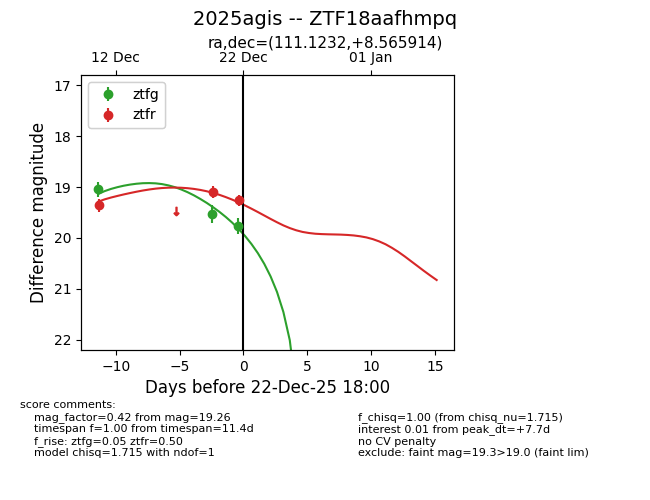
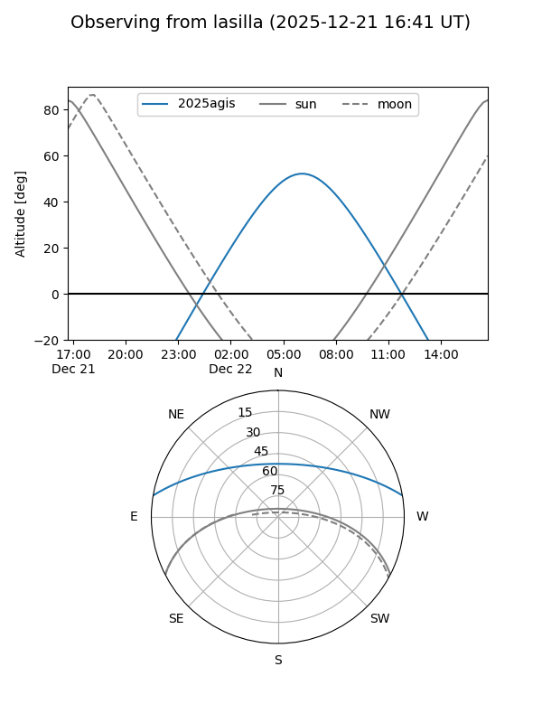
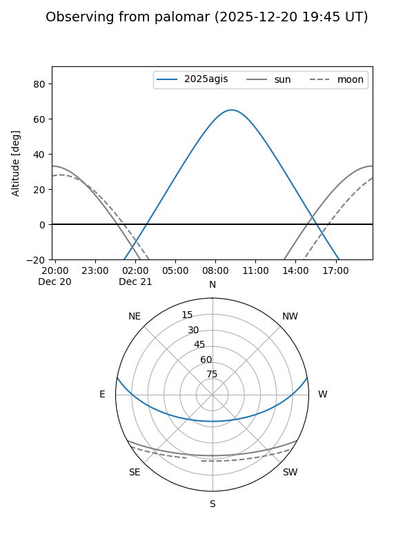
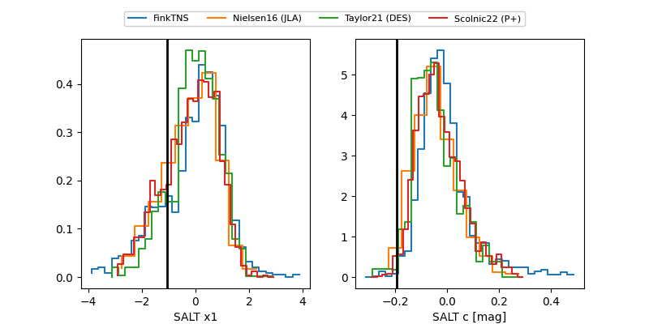

2025agis
Target 2025agis at 2025-12-22 18:01
Aliases and brokers:
FINK: fink-portal.org/ZTF18aafhmpq
Lasair: lasair-ztf.lsst.ac.uk/objects/ZTF18aafhmpq
ALeRCE: alerce.online/object/ZTF18aafhmpq
TNS: wis-tns.org/object/2025agis
YSE: ziggy.ucolick.org/yse/transient_detail/2025agis
alt names
ZTF18aafhmpq (ztf,fink_ztf)
2025agis (tns,yse)
Coordinates:
equatorial (ra, dec) = 111.1232,+8.56591
equatorial (HMS+DMS) = 07:24:29.57,+08:33:57.29
galactic (l, b) = (208.9713,+11.21016)
Flags:
Photometry:
last ztfg=19.76, ztfr=19.26
3 ztfg, 3 ztfr detections
Lightcurve

Visibility


Additional plots
